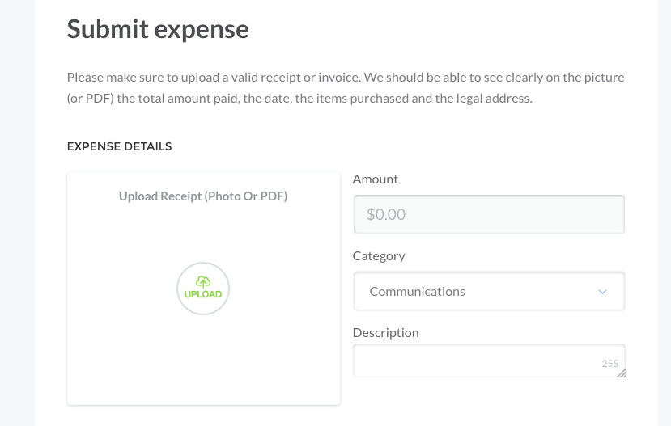
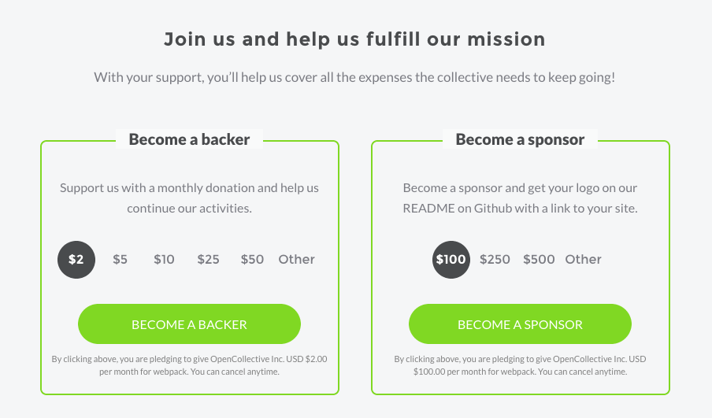
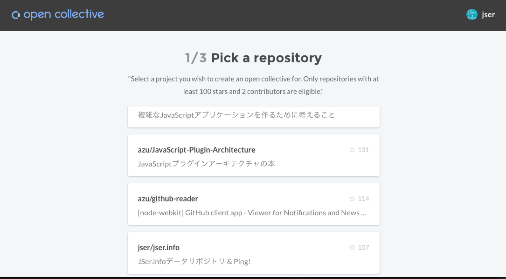

autoscale: true
Open Collective
自己紹介

- Name : azu
- Twitter : @azu_re
- Website: Web scratch, JSer.info

An Open Collective is a group of people with a shared mission that operates in full transparency. -- https://opencollective.com/faq
What is Open Collective?
- 会費や寄付を募るページを作成できる
- コミュニティでそのお金を管理できる
- メンバーはbudgetから経費精算できる
- budgetは公開され、お金の動きは公開される
誰がどのように?
- オープンソースプロジェクトの寄付管理
- オープンソースプロジェクトの開発費用管理
- ミートアップの費用管理
Donate
- backerとなってdonateすることができる
- 月額:$2, $5, $10, $25, $50
- 月額/年額/単発: 任意の金額
- sponsorになることができる
- 月額: $100~
- sponsorはREADMEなどに掲載されリンクを張ってもらえる
^ Stripe and PayPalで支払い
preactの例

オープンソースとお金の問題
- 現状のOSSプロジェクトは、お金を扱うのは避ける傾向がある
- 法人格を作るのが面倒
- オーバーヘッド大きい
- ずっとボランティアでサポートを続ける
- あまり健全とはいえないエコシステム
Open Collectiveの目的
No legal entity, no bank account, no budget
Definition of an Open Collective
I define an Open Collective as a lightweight association that can collect and disperse money transparently without creating a legal entity. -- A New Form of Association for the Internet Generation — part 2 – Open Collective – Medium
Open Collectiveのゴール
- コミュニティが自立出来るようなインフラを作ること
- 誰もがcontributors, backers, sponsorsになれるように
- Moving beyond the charity framework – Open Collective – Medium
クラウドファンディングとの違い
- 定期的な資金の調達ができる
- デフォルトは月額のdonate(単発の寄付もできる)
- お金のやり取りの透明性を確保する(推奨する)
- お金を取り出す際には、どのようにお金を使ったかを提出
- その経費精算は公開される
透明性

^ 年間の予算を算出できる 月額のbackerやsponsorを含めたもの
透明性の仕組み
- bucketからお金を引き出すには、費用の利用用途を提出する
- いくら
- 用途のカテゴリ
- 請求書の画像(optional)
- 説明

採用してるプロジェクト
Next in webpack
The future: Open source projects creating incentives for sponsors -- How Webpack raised $15,000 in 3 months
- webpackはスポンサーに対してインセンティブを提供してる
- Office hours
- On-site visit
Influence
- webpackのtodo listへの投票
- Open Collectiveでbackerになってると+100ポイント
- バックエンドはlambda使ってる

Backerになる方法

Backerになる方法
- ログイン(メールアドレスだけいい)
- StripeかPaypayでお金は払う
- おわり
Collectiveの作り方
- opencollective.com/opensource/apply
- 条件:
- 2 contributor以上
- 100 star以上

Open Collective利用費用
10% + credit card fees (usually 3% + $0.30/transaction)
デザインとして面白いところ
- ログインにパスワード不要
- メールアドレスでのワンタイムのみ
- Open Collective is also Open Source
まとめ
- Open CollectiveはOSS開発のエコシステムを改善しようとしてる
- (小さな)コミュニティが法人を持たなくてもいいような環境